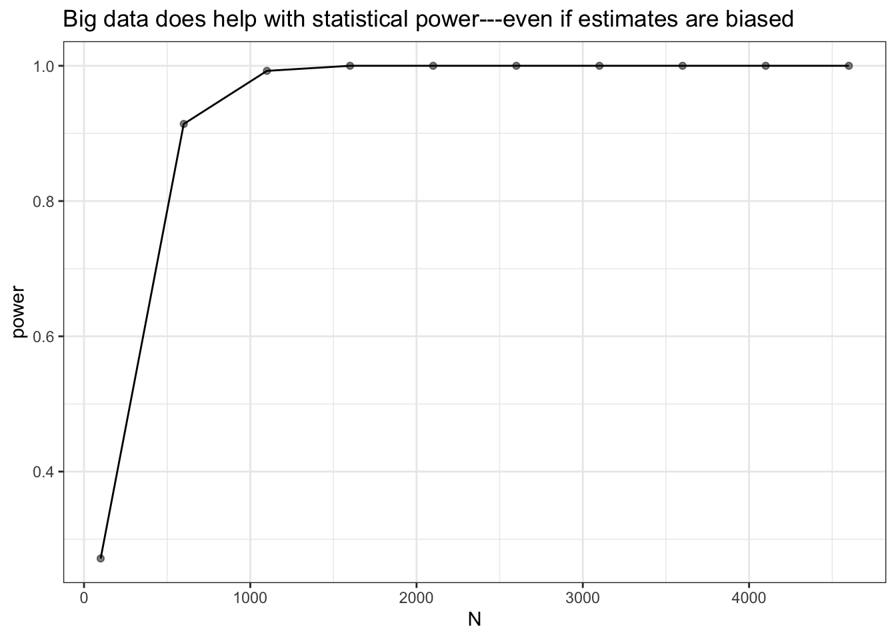

N <- 100
big_data_design <-
declare_model(
N = N, # sample size -- we will allow this to grow
u = rnorm(N), # unobserved heterogeneity affects outcome and assignment
e = rnorm(N, sd = 4), # idiosyncratic error
Z = rbinom(N, size = 1, prob = pnorm(u)), # treatment assignment depends on u
potential_outcomes(Y ~ u + e) # outcomes depend on U and e (but not Z!)
) +
# reveal outcomes on the basis of realized treatment
declare_measurement(Y = reveal_outcomes(Y ~ Z)) +
# true effect is 0
declare_inquiry(ATE = 0) +
# use difference-in-means to estimate effect
declare_estimator(Y ~ Z, model = difference_in_means, inquiry = "ATE")
# we want to know about bias and power
diags <- declare_diagnosands(bias = mean(estimate - estimand),
power = mean(p.value <= 0.05))We usually think that the bigger the study the better. And so huge studies often rightly garner great publicity. But the ability to generate more precise results also comes with a risk. If study designs are at risk of bias and readers (or publicists!) employ a statistical significance filter, then big data might not remove threats of bias and might actually make things worse.
Motivating Example: Exercise and Mental Health
A recent study in the Lancet by Chekroud et al. (2018) used information on 1.2 million individuals to describe the “association” between physical exercise and mental health, finding that even after controlling for demographics and health indicators like body mass index (BMI), people who exercise more have better mental health.
The study is huge. It is also observational in the sense that the decision to take the treatment (exercise) may reflect a huge array of features about people, both observable and unobservable, that may also relate to mental health. This makes it difficult to make causal claims and the authors of the Lancet study are careful to use descriptive language like “association” (rather than “causes” or “produces”) in the article. Though when discussing and promoting work like this causal claims often slip in pretty quickly. See this thread from @annemscheel on how the authors shift directly into causal language when giving policy recommendations.
You might think that the size of the study protects the authors and gives them leeway to make bolder claims. But in fact the opposite might be the case.
To illustrate, let’s suppose (perhaps ungenerously) that the goal of the study is not descriptive but is in fact causal. We will declare a design that involves estimating a treatment effect in an observational study (i.e., the researcher did not assign subjects to exercise or not). We should say, of course, that even in an experimental study, some design or analysis choices could also lead to bias, so the problem described here applies to any research design that is prone to bias.
We want to know three things about this design: what’s the bias, what’s the power, and how these depend on sample size. We’re going to simulate with an assumed average effect of zero so that it’s clear what’s going on when we (falsely) reject a null hypothesis that is, in this case, true.
Given one design we can easily make a sequence of designs with bigger and bigger N:
designs <- redesign(big_data_design, N = seq(100, 6000, by = 500))We diagnose the sequence of designs in one go:
diagnosis <- diagnose_design(designs, diagnosands = diags)Bias persists as N increases
The figure below shows the estimated treatment effects in each simulation for a series of sample sizes. The red line is the truth — the real average treatment effect is zero in this simulation. But the estimates are all well above zero, and the problem doesn’t go away as the sample size increases.
get_simulations(diagnosis) %>%
ggplot(aes(x = N, y = estimate)) +
geom_point(alpha = 0.2) +
geom_hline(yintercept = 0.0, color = "red") +
geom_text(data = data.frame(N = 3000, estimate = -0.1, label = "True ATE = 0"),
aes(label = label)) +
coord_cartesian(ylim = c(-1, 3)) +
ggtitle("Big data doesn't necessarily remove bias")
Likelihood of a false positive increases as N increases
It gets worse! As sample size increases, so does power, or the probability of getting a “statistically significant” result. The p-values will indicate that the estimate is significant even though it is badly biased away from the truth. The ATE in this simulation is zero, so power should be equal to 0.05, since that’s what we chose as our significance threshold.
get_diagnosands(diagnosis) %>%
ggplot(aes(x = N, y = power)) +
geom_point(alpha = 0.5) + geom_line() +
theme_bw() +
ggtitle("Big data does help with statistical power---even if estimates are biased")
In summary, more data is generally better, but ever bigger data won’t necessarily solve the problem of unobserved confounding. A consequence of the statistical significance filter is that we tend to hear only about findings that are “significant.” Big data gets studies through this filter because, with so many observations, statistical significance is trivially easy to achieve. To be clear, we are not saying that the study in the Lancet is biased (we can’t know whether there are unobserved confounders). But if a design (observational or experimental!) is biased, increasing the sample size can make the wrong inference a whole lot more likely.
As Uncle Ben might have said to Peter Parker if he’d opted for social science instead of being a superhero: with great statistical power comes great inferential responsiblity.
References
Chekroud, Sammi R, Ralitza Gueorguieva, Amanda B Zheutlin, Martin Paulus, Harlan M Krumholz, John H Krystal, and Adam M Chekroud. 2018. “Association between physical exercise and mental health in 1.2 million individuals in the USA between 2011 and 2015: a cross-sectional study.” The Lancet Psychiatry 5 (9): 739–46.